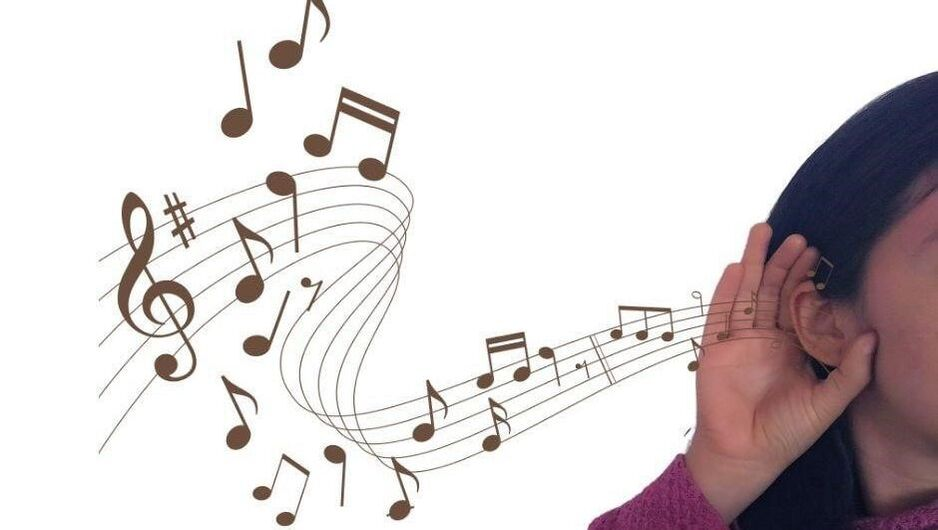

Ear Training and Harmony
Ear training is the process of teaching your ears to recognize and understand different sounds in music.
It helps students identify musical notes, rhythms, intervals, chords, and melodies by hearing them, not just reading them.

also
Ear training is the process of developing the ability to identify musical elements through listening.
Importance of Ear Training
- It improves your ability to sing or play an instrument accurately.
- It helps you recognize when something sounds wrong or off-pitch.
- It develops your musical memory and listening skills.
- It makes it easier to play music by ear (without sheet music).
Components of Ear Training
- Listening and Singing Exercises – like singing back a note or melody played on an instrument.
- Clapping Rhythms – clapping out a rhythm after hearing it.
- Identifying Intervals – learning to hear the difference between a 2nd, 3rd, 4th, etc.
- Sight Singing – singing music just by looking at the notes.
Examples:
- The teacher plays two notes: C and G. The student learns to tell that they are a “fifth” apart.
- The teacher claps a rhythm, and the student repeats it.
- A melody is played on the piano, and the student sings it back.
🎶 Harmony
Meaning of Harmony
Harmony is when two or more musical notes are played or sung at the same time and sound pleasant together. It is what gives depth and fullness to music.
🎼 Difference between Melody and Harmony
- Melody is the main tune (what you usually sing).
- Harmony supports the melody with other notes that blend well with it.
Types of Harmony
- Consonant Harmony: Pleasant-sounding combinations (e.g., C and G played together).
- Dissonant Harmony: Tense or clashing sounds used to create emotion, later resolved into consonance.
Basic Chords
- Major Triad (e.g., C-E-G) - Bright sound.
- Minor Triad (e.g., C-E♭-G) - Sad sound.
Importance of Harmony in Music
- It adds beauty and depth to music.
- It supports the melody and makes it more interesting.
- It helps in group singing or choir arrangements.
- It helps students understand chord formation and musical structure
🧠 Simple Harmony Practice (Classroom Activity)
- Teacher plays a C chord (C-E-G) and lets students hear how the notes blend.
- Group A sings the melody while Group B sings the harmony part under it.
- Students identify when a song changes from one chord to another.
Rudiments of Harmony
“Rudiments” means the basic parts or foundations. So, the rudiments of harmony are the basic rules and elements that guide how musical notes are combined to form chords and create pleasing sounds in music.
🎹 Main Rudiments of Harmony
- Scale A scale is a group of musical notes arranged in order of pitch (from low to high or high to low).
Example: C Major Scale – C, D, E, F, G, A, B, C
Scales help us understand which notes can be used to build melodies and harmonies.
- Chord A chord is formed when three or more different notes are played at the same time.
Example: C Major Chord – C, E, G
Chords are the building blocks of harmony.
- Intervals An interval is the distance between two musical notes.
Example: From C to E is a third (3rd interval).
Intervals are important in building harmony and chords.
- Triad A triad is a type of chord made of three notes: the root, the third, and the fifth.
Example: In the C triad: C (root), E (3rd), G (5th).
- Tonality Tonality refers to the key of a piece of music – whether it is in a major or minor key.
Example: A song in the key of G major will mostly use notes from the G major scale.
Types of Harmony
- Two-Part Harmony This is when two musical lines are sung or played at the same time, with one being the melody and the other the harmony.
Example: One student sings the main melody, another sings a different note that fits well with it.
- Four-Part Harmony This involves four voice parts – soprano, alto, tenor, and bass – each singing a different note at the same time to form full-sounding harmony.
Example: Used in choir or hymns, with each section singing its part.